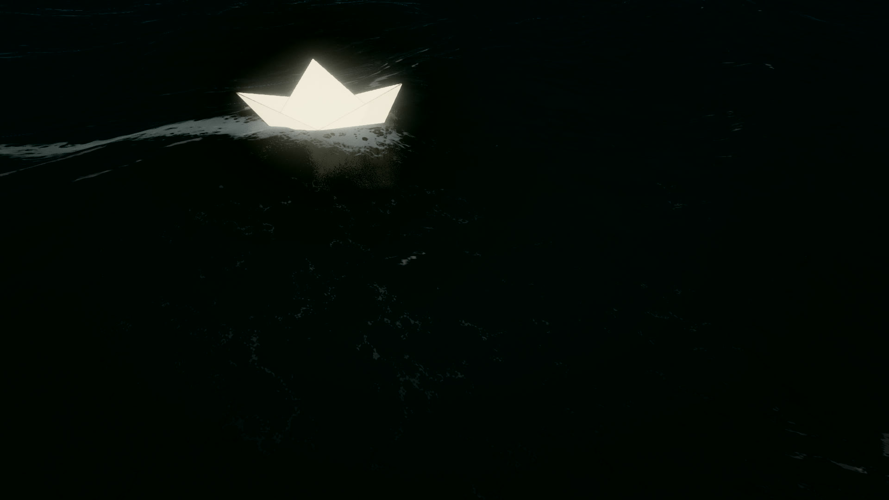
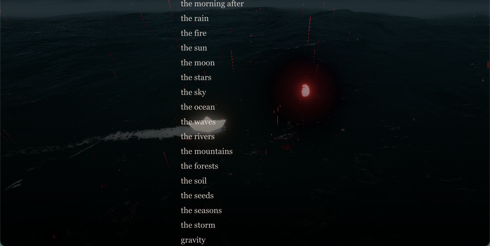

Uncredited.
“Every masterpiece is a theft, so distributed people think it is individual genius.”
Zhixuan Xiao
Good artists copy, great artists steal.
Pablo Picasso
This begins with the death of the solitary author.
Before my name, there were parents, teachers, rivals, tools, roads, images, strangers: every hand that left something behind for me to carry. I did not make this alone. I was made through contact.
No one credits the chemist who ground the pigment, the forester who pulped the paper, the alphabet, the electricity, the rival they envied at sixteen, the stranger whose face they keep redrawing without knowing it. We pretend the work begins at the signature. It never does.
When a tool arrives that admits it was trained on everyone, the rage is not about theft. It is about the lie of the singular self, finally exposed.
For humans, repetition is a form of keeping. We sing the song again to keep the dead alive. We trace the master's line to keep their hand in ours. The machine repeats us back to ourselves, and we call it stealing, because we never had a word for the thing we have always done.
Play is the only honest answer: to enter what others have left, change it by carrying it, and leave it changed for someone else.
I made this in Quill, a VR software I really liked. This was the first time I kept returning to the same ocean.
I rebuilt the same idea procedurally in Blender. Repeating it made the work feel less like one image and more like a habit.
I made the ocean more realistic using FFT, JONSWAP, and SSS. It feels like a never-ending effort to chase the work, not finish it.

When the credits roll, you can add your own name if you think you have inspired or influenced me in any way at all.
A note
This important piece completes my manifesto, but I didn't get a chance to say it during the presentation, so I am saying it here.
Thank you